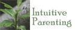
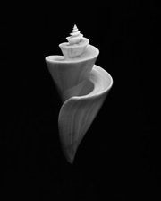

Links
Here are some links to various other sites offering information, services or purchasing possibilities. When you click on the link, the web site will open in a new window and this site will remain open behind it.
An Australian based natural & attachment parenting community. Offering encouragement for parents to gently and naturally raise their children. Supporting parents with toddlers, preschool and school aged children and teenagers. With a strong belief in full term breastfeeding, gentle discipline, co sleeping, environmentally friendly toilet awareness, natural, organic nutrition, natural therapies, sustainable living, homeschooling and alternative schooling.
This is an excellent, comprehensive online directory listing a huge range of natural parenting-friendly or attachment-friendly health practitioners, products, services and support groups.
Giggle Bubble Media is a collaboration of artists and educators dedicated to creating and fostering a sense of connection for children and families. Giggle Bubble Media presents stories of hope, collective strength, and possibility. Wonderful and heartfelt material for children.

Pagoda Shell by Chris Raggatt - father, photographer, musician.
Emotional Intelligence :: Publications :: Counselling Services :: About Robin Grille :: Contact :: Links :: Home
Our Emotional Health web site built by Slam; best viewed at minimum 800x600 resolution. Copyright 2005